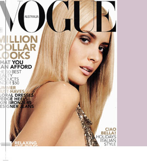

|
|
|
|
|
|
Fashion Model Management was founded in 1967 in Milan, Italy.
Since its opening Fashion Model Management has been regarded as one of the industry's most important and powerful modeling agencies.
Fashion Model Management represents many of the world's biggest stars including Daniela Pestova, Georgina Grenville, Amanda Moore and Alexandra Redgrave.
Fynns' Models sat down with Fashion Management Scout Ana Nadezdic to find out what she looks for in a new model, how their agency works and what's on the horizon for this power agency.
How did you get started in the modeling business?
Ana: I would say that I grew up surrounded by models, because my mother was the fashion editor of the magazine "Bazar" in Belgrade. I remember being 8 years old and accompanying my mom during the fashion shows, admiring those gorgeous women and men walking down the catwalk. I developed early on a big curiosity about the human beauty. For me a beautiful man or woman is like a piece of art, painting or sculpture to admire. Later on, after graduating at the Art Academy of Milan, trying to become an agent was the most natural thing. And I loved it.
How did you get started working with Fashion Management?
Ana: I was already in the business for 3 years as an agent, working for a very good company in Milan, and I felt the time has arrived for me to try to do the next step in my career with the best agency in Europe. I called Fashion asking for the owner, Paolo Roberti. He gave me an appointment for the same day. After just 30 minutes of the interview, I had a contract in my hand. I was so happy. That was a start of my big journey around the world searching for the new rising stars. And the journey is still on, after 4 years I am still very excited to work for this great company.
What advice would you give a new model that is just starting out in the business?
Ana: Try to get as much information about the business as you can from people with a good reputation. Be very critical with yourself, find out if you really have what it takes to become a model, and if not don't be disappointed, and don't measure your self-worth with whether you can be a model or not. Everybody has a special skill to do something in life, try to find yours. And if you do have what it takes, be ready to work hard, face many challenges and prepare your self to be rejected many, many times. Not every client will look for your type, and not every client will be nice with you.
What qualities do you look for in a new model?
Ana: Besides the physical requirements that are more or less standard, I would say that some of the crucial things are the maturity, drive and desire to succeed. Without that, even the most gorgeous creature will fail.
How often do you go on the road to scout for new models?
Ana: You know, sometimes I feel like a gypsy, waking up every single day in a new hotel room, in a different city, different airport... On average, I am away 2 weeks per month.
What are your age, height and stats requirements for your models?
Ana: With some exceptions, I would say that for the women the age is between 16 and 21, height 5' 8" to 5' 11", slim but not too skinny, for men the height is from 6' to 6' 2', jacket size 40 to 42 regular.
Is there ever an exception to your height rule?
Ana: Yes, we have a few great female models tall less then 5' 7". In that case, the body and the face need to be extraordinary to compensate for the height. I would like to point out that it's difficult to succeed with a height less then 5' 8", but not impossible.
Do models need a special visa to work in Milan?
Ana: Some countries like the ex Soviet Union and Yugoslavia do require a visa, but most of the countries do not, it's enough to have a valid passport and a return ticket.
Does a model need professional photos before they can work with your agency?
Ana: Sometimes we do need to see at least 1 professional photo test in order to find out if the model is photogenic. Other times it is enough to send a model to the clients with just the regular polaroids as soon as they arrive in town. Depending on the quality of the photos, sometimes it is better not to have them instead of having the wrong shots. To answer your question shortly, the model does not need professional photos before they can work with our agency.
What are the important seasons in Milan and when do they happen?
Ana: Milan is usually busy throughout the whole year. Depending on the type of the model, we can split the year in the show seasons twice a year (women the end of September beginning of October / the end of February beginning of March and men July and January) and print which goes the whole year excluding the month of August and 2 weeks around the Christmas.
Who are your top girls and guys right now?
Ana: Just to mention few of them:
Natasa Vojnovic - Gucci, Calvin Klein & Cerrutti Campaigns
Filipa - Ralph Lauren Fragrance, Balenciaga Campaign
Adina Fohlin - YSL Campaign
Jessica Miller - Calvin Klein
Ivan De Pineda - Versace, Donna Karan, YSL, Gucci
Travis Fimmel - Calvin Klein
Cristiano Narduzzi - Worldwide Swatch Campaign
Who are your up and coming stars?
Ana: There are many of them that everybody will hear about shortly, but one of them is Elise Crombez who was the last season exclusive for Prada with the new campaigns for Ralph Lauren, Helmut Lang and Jil Sander.
Fashion Management has signed models from Fynns' Models including Freelance Model Robina D., how often do you search through our website for new models?
Ana: The Fynns' website is a great tool to search for new models and I make sure I browse through it at least once a week. I also receive photo packages from Fynns' several times a week with new models for me to look at. Fynns' does a great job promoting their models and I can always count on seeing a great girl or guy that I am interested in for the Milan market.
Thank you so much for taking the time to speak with us today. We look forward to sending more great girls and guys to your agency.
Ana: Thank you. We hope to see lots of great new models on your website and look forward to having them come to work in Milan.
|
|

|
|
 |
|
 |
|

|
|
|
|